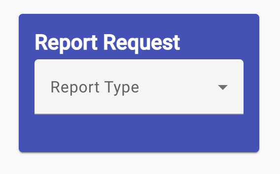
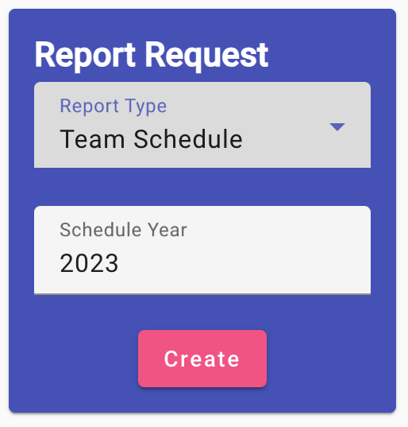
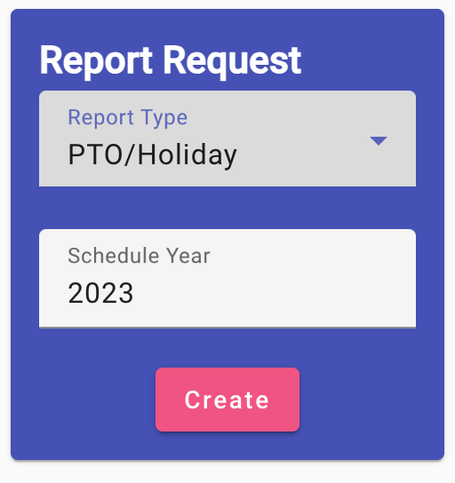
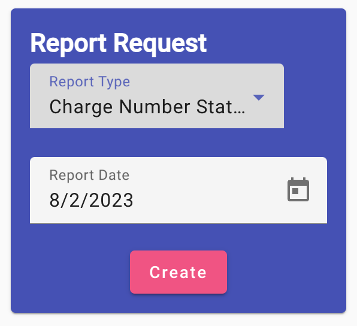
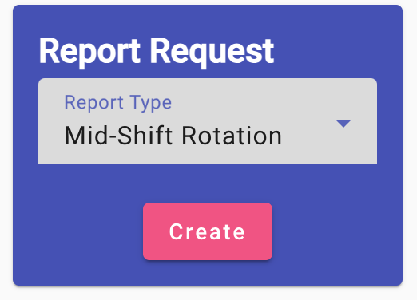
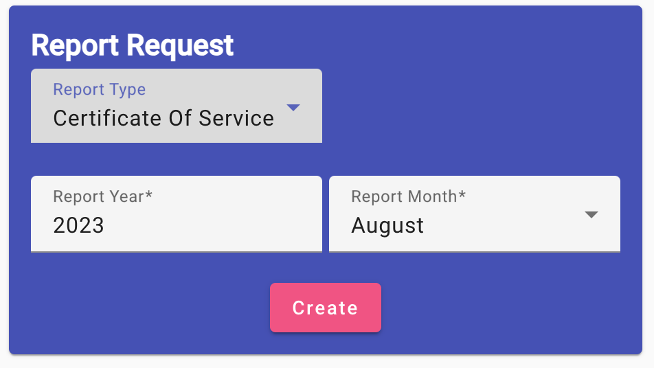

Select the Report Type - in the only drop-down selector, choose the type of report you want to see. See the overview for a definition of each type of report.
Team Schedule - The team schedule requires the schedule year to be used for the report, so this input selector is now displayed. Use the up and down arrows at the right to select the year for the report to use.
PTO/Holiday - The PTO/Holiday requires the schedule year to be used for the report, so this input selector is now displayed. Use the up and down arrows at the right to select the year for the report to use.
Charge Number Status - The Charge Number Status requires a report date/base date for the creation. It defaults to the current date, but you can change this for a future or past date by clicking on the calendar icon on the right and selecting the new date.
Mid-Shift Rotation - The mid-shift rotation doesn't require any additional input.
Certificate of Service - The Certificate of Service is produced for a particular month/year. Type in the year (default is current) and choose the required month.
